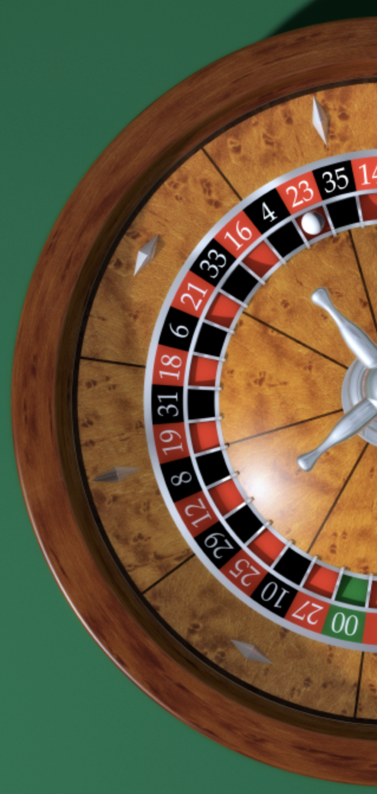
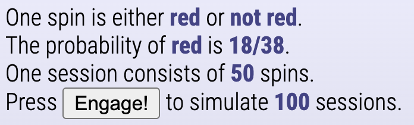
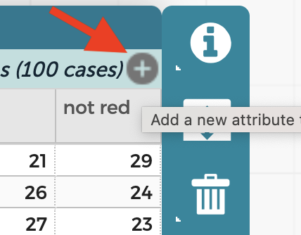
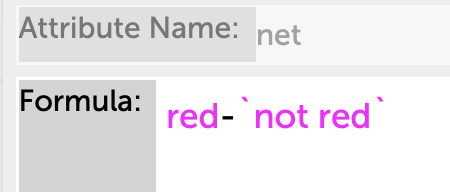
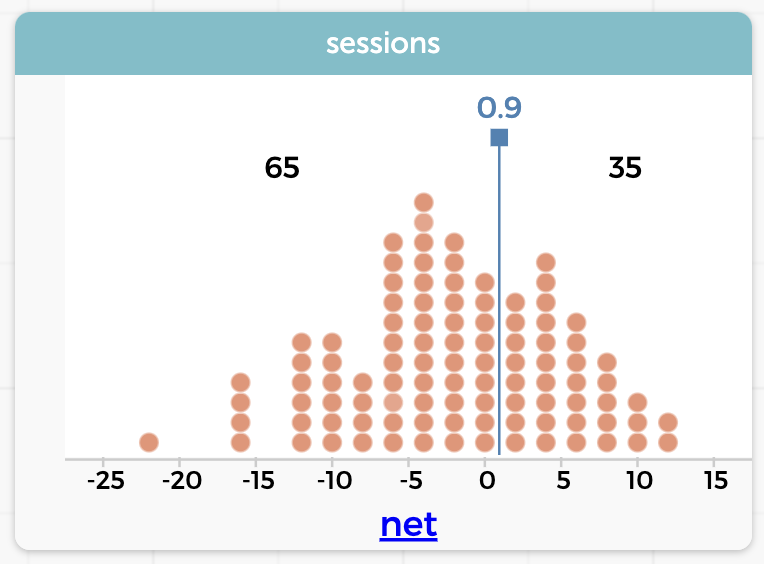

Probability Experiments and Simulations
On the Modelling page, we used a function to approximate some measurements. Let’s look at another kind of model, a simulation that includes randomness.
We will model a process, in this case, the experience of playing roulette. To simplify things, we will always bet $1 on red. If red comes up, we get our $1 back plus $1 more. If it does not come up, we lose our $1.

Now: on our roulette wheel, there are 38 slots, of which 18—less than half—are red. So even before we simulate, we admit that the “house” has an advantage. We could even compute the expected value of a single play, which will be less than zero.
But the expected value is not our question today. We want to know our chances of coming out ahead if we play 50 times. To figure that out theoretically is a bit more complicated than we want to tackle, so we’ll use the computer to play the game many times and record the results.
We will use a CODAP “plugin” called the Binomial Simulator. When you first load it, it looks like the one in the live example below. As you can see, it’s set up to do a coin experiment.
The cool thing in this plugin is that it’s all about the language. We will change the words (and some of the numbers) so that the paragraph at the top reads the way we want it. The we will press Engage! and CODAP will run the simulation.
The paragraph we want is this:

Change the text and numbers in the simulator so that your paragraph matches that one.
Then press Engage!. A CODAP table will appear with the number of red and the number of not red for each of the 100 sessions you simulated.
We want to know how much we won. That is the quantity red - not red. Let’s make a new column to calculate it.
In the upper right of the table, there is a gray circle with a plus sign. Click that to make a new column.

First, you’ll give it a name; let’s call it net.
Then click on the (underlined) name net to get a menu. Choose Edit Formula.
In the box, type red and a minus sign and then start typing not. CODAP will give you “not red” as an option; take it. You’ll see that (because of the space) CODAP surrounds the name 'not red' with ticks.

After you click Apply, the net column fills with numbers: the net winnings during each session.
Graph net. How many times (out of 100) is your value for net greater than zero?
I don’t want to count them either. Here’s what to do:
- In the ruler palette, click
Movable Valueand chooseAdd. A line appears that you can move back and forth. - Now go back to the ruler palette and choose
Count. Aha! Now you can see how many are on each side of the line. Position it just above zero to get the answer. We had 35 winners out of 100 sessions:

Of course, different students will get different results, but two things should be clear:
- If we imagine that this represents 100 gamblers, fewer than half of them come out ahead.
- By the same token, quite a few of them do. And they will be the ones that tell their friends how great it was to go gambling.
More commentary
Even Results. All values of net are even. Why?
Why Binomial? We’re using the Binomial Simulator because this particular situation is in fact binomial: the probability of winning each spin (18/38) is constant, and is independent of the success or failure of any other spin of the wheel.
Plenty of other problems are not binomial (for example, the probability of drawing three aces in five cards) and they require different simulation tools.
A lot of problems are binomial, though, so using this Binomial Simulator gives you an interesting, relatively simple entry into simulation. Want to see other binomial problems? Check out this chapter in the online book, Awash in Data.
Expected Value. The expected value for one spin will be
\[E = \frac{18}{38} - \frac{20}{38} \approx -0.053\]
That is, on average, you lose five cents on every spin of the wheel.
This also means that the expected value for 50 spins is about –2.6. That should also be (roughly) the mean of your distribution for net—and it should get closer if you increase the sample size.
That said, your graph should show clearly that not very many players lose exactly $2.00. That is, you shouldn’t expect the expected value. This is an important statistical lesson about variability!
Psychology of Gambling. It’s an interesting question whether we in school should avoid problems that involve gambling. One strategy is to do what we do here: present information that might help serve to inoculate students.
In a more sophisticated simulation, students could ask, what fraction of all players were ever ahead during their 50 spins? That turns out to be more than half, which might lead even more people to have a positive, “I almost won” feeling about their trip to the casino.
But of course, the house always comes out ahead.